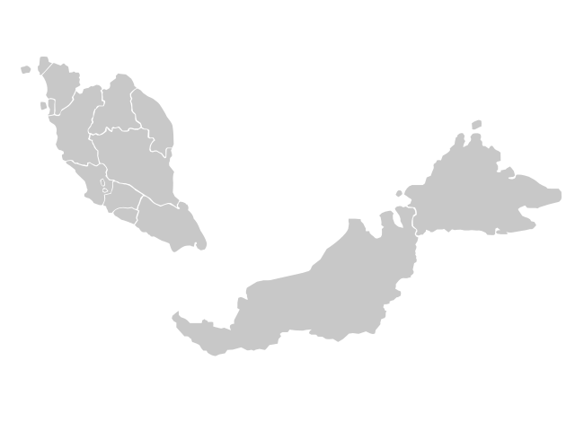

Wuhan virus (COVID-19) statistics in Malaysia
Click to switch linear/log axis

Reference:
Official Portal Ministry of Health Malaysia COVID-10 (Media Centre)
http://www.moh.gov.my/index.php/pages/view/2019-ncov-wuhan-kenyataan-akhbar
2020 coronavirus pandemic in Malaysia
https://en.wikipedia.org/wiki/2020_coronavirus_pandemic_in_Malaysia
Covid-19: Current situation in Malaysia (updated daily)
https://www.thestar.com.my/news/nation/2020/03/23/covid-19-current-situation-in-malaysia-updated-daily